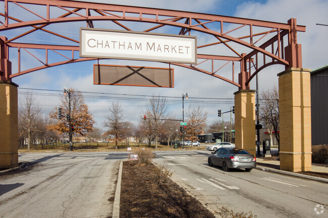
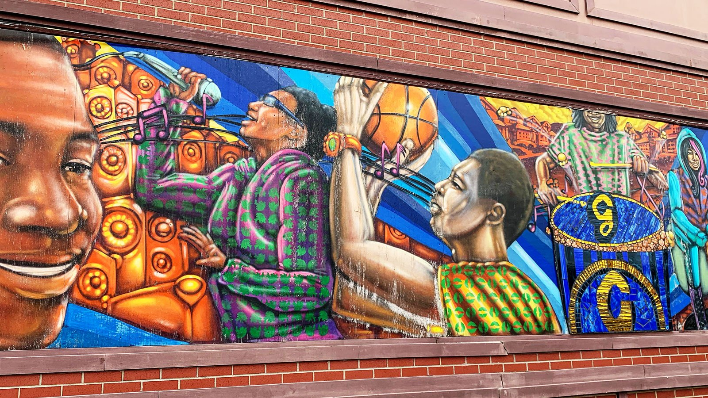

Meet The Neighborhood
The Problem
The Solution
AP Human Geography Project
By Joshua Gumm and Juel Pryor
Meet Chatham

Source: Homes
Chatham, located on Chicago's South Side, is one of the city's many community areas. It encompasses the neighborhoods of Chatham-Avalon, Chatham Club, Chesterfield, East Chatham, West Chatham, and the northern part of West Chesterfield. It is for the most part predominantly African American, Chatham has been a key area for the city's middle-class African American population since the late 1950s and includes residents such as former Senator Roland Burris, and many city employees and officials also live in Chatham.
 Source: Niche
Source: Niche
This shows us the average income for the residents in Chatham, with it being 46.9k and being well under the national average we can tell that most residents are middle to low class, which can be largely due to the fact that it also shows us the percantage of people in Chatham who've completed some level of college education, which isn't very high. Now this graph/data shows an alarming percantage of residents who haven't even gotten GED with it being 12%, even higher than residents who have gotten a Master's degree or higher.

Source: WTTW, Monique Wingard
But through the bad there shines good, Chatham's residents share a strong bond, built on mutual respect and a collective effort to uplift one another. This sense of unity is evident in the community's active involvement in local initiatives, from educational programs to neighborhood beautification projects. The area is home to several prominent institutions and landmarks, such as the Chatham Avalon Park Community Council and the historic New Regal Theater, which contributes to the neighborhood's cultural and historical significance.
Back To The Top